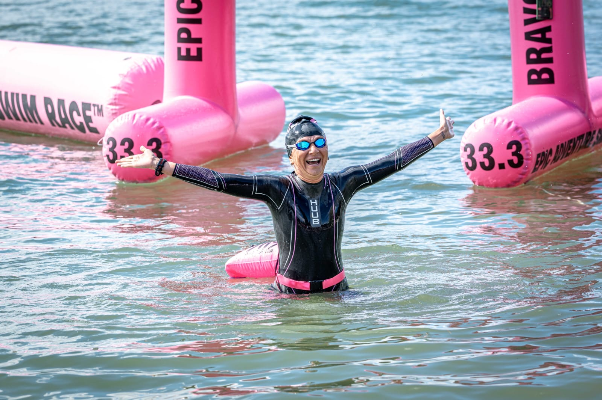
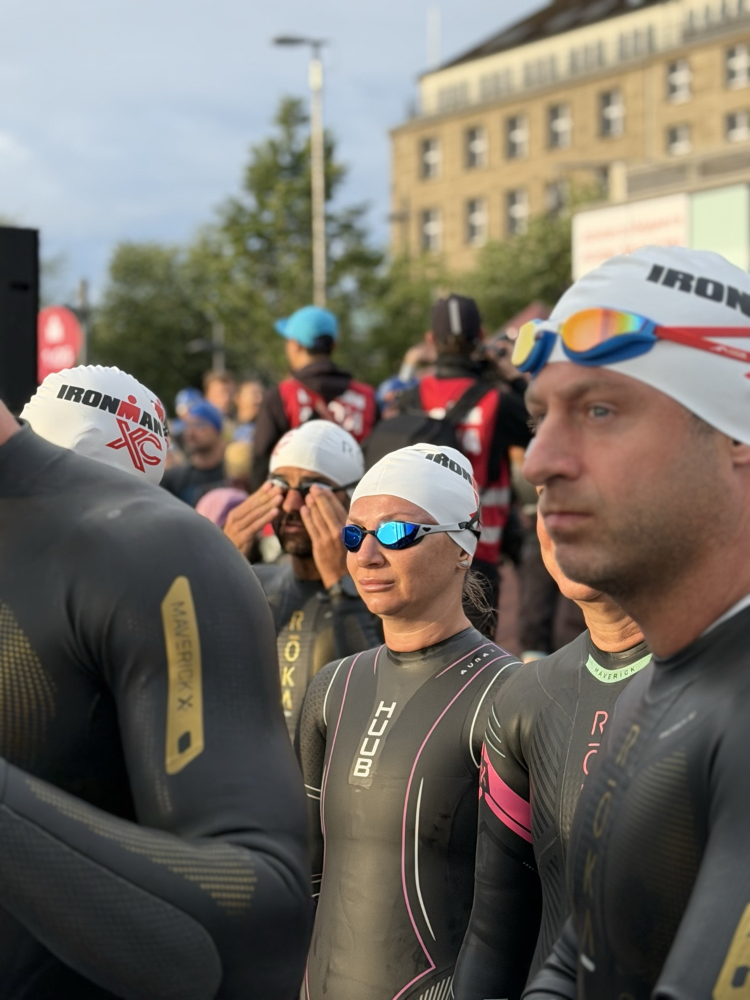
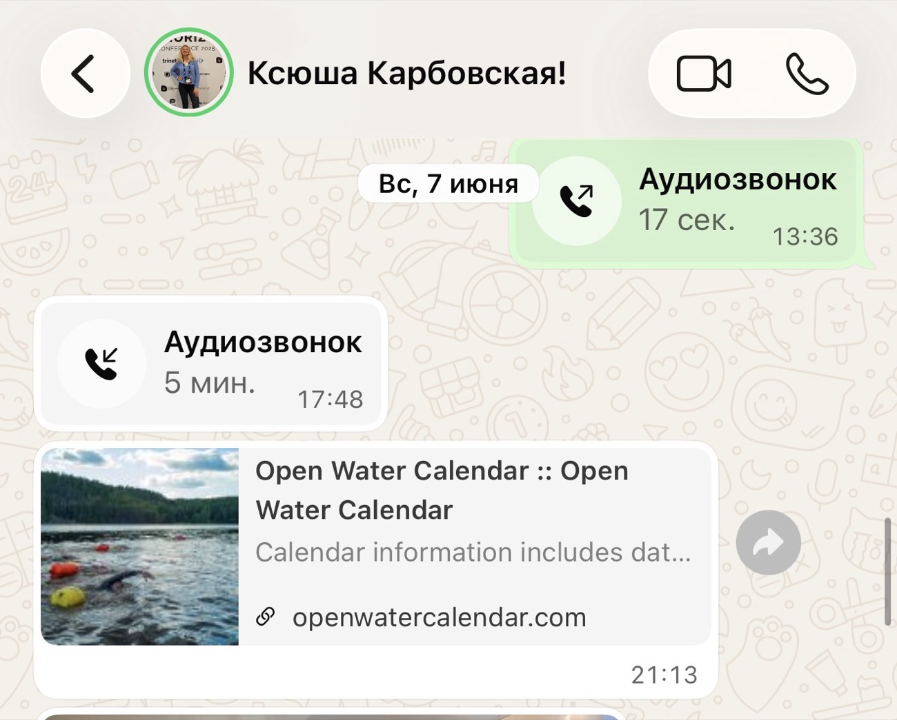
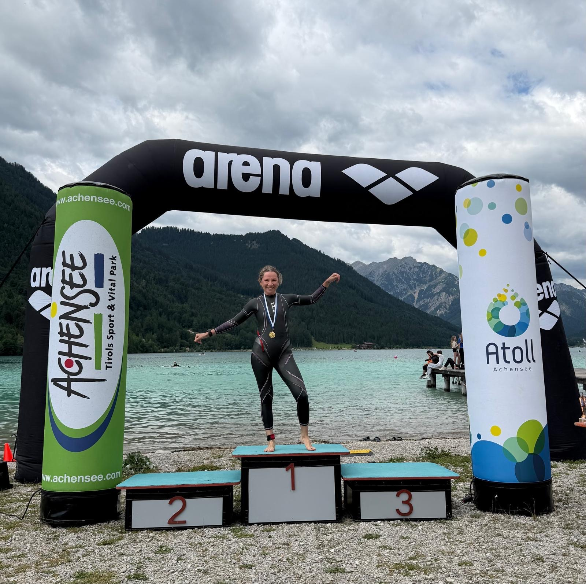
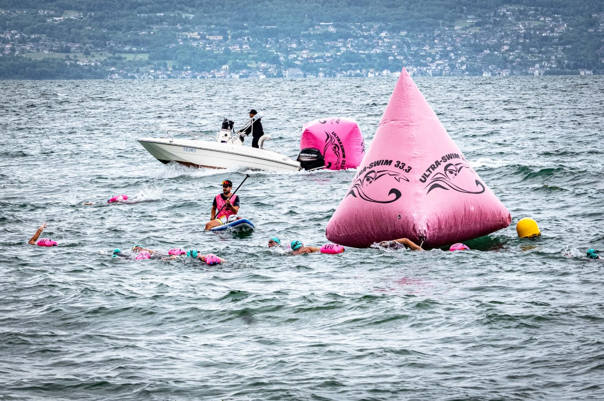
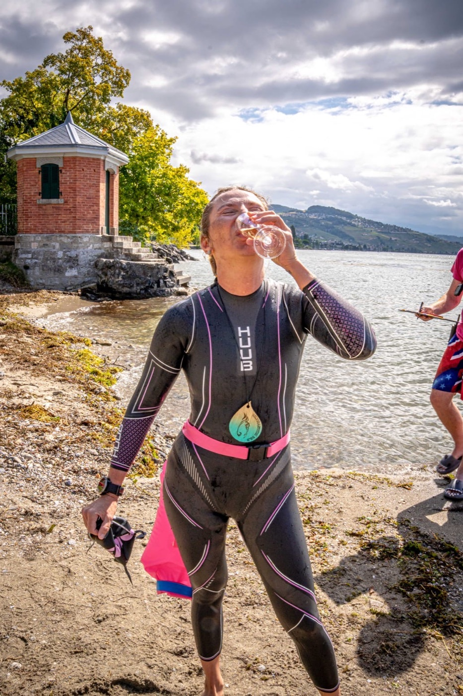
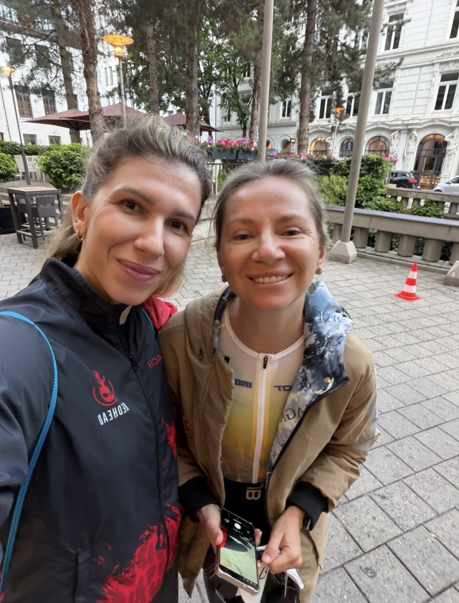

The Hardest Decision an Athlete Can Make - and What Came After
The hardest decision an athlete can make is to quit a race…
On June 7, my athlete Ksenia made it. Seven weeks later, she swam 20 kilometers across Lake Geneva. Let me tell you what happened between those two dates.

Hamburg
June 7, IRONMAN Hamburg. During the swim leg, Ksenia had a breathing spasm. Cold water, no way to take a full breath, hundreds of people around you - and you're in the water alone. Continuing wasn't safe, so she made the call to stop. The right call: there are many races, and one life.

An hour later we were sitting in the hotel doing the debrief. Not in the "why did this happen" format. In the "what do we do next" format. And here's the one thing you need to understand about fear.
Fear isn't cured by talks, books, or motivational videos. The brain only trusts experience. Walk away from open water for six months after something like that, and the brain records one thing: DANGER lives here. Next time the spasm will come earlier. On the shore.
The brain only trusts experience.
So we do the opposite. We walk straight into the fear. While the season is in full swing - we race as much as possible. Not for medals. Not for pretty photos. For new evidence for the brain: "I handled it. I'm alive."
Nine p.m. That Same Day
And you know what struck me most? At nine p.m. that same evening, Ksenia sends me a link to an open water race calendar. No "give me some time to recover." Just: "Let's pick the races."
In that moment, everything was already decided.

Then the facts. July 5 - Austria, an ice-cold mountain lake, 5 kilometers of open water. One month after Hamburg. But that was just the warm-up.

July 24 - the multi-day UltraSwim 33.3 across Lake Geneva. Four days in a row, more than 20 kilometers total. On day two - crossing the lake from France to Switzerland, the longest swim of her life.
But the real story happened on day four.
Day Four

Three days of swimming fatigue in the body. The weather turned so rough it made Hamburg look gentle. And on the very first lap, the panic came back. The same spasm. The same fear.
Only now Ksenia knew what to do. Exhale. Lie flat like an arrow on the water. Relax everything - and stroke her way to the finish.
The fear didn't disappear. What changed is what she does when it shows up. That was the exact skill we'd been chasing since Hamburg. You can't buy it from any coach or any tutorial. You can only earn it. Yourself. In the water.
The fear didn't disappear. What changed is what she does when it shows up.
And here's the funny part: Ksenia actually can't stand swimming. At the first briefing she told the organizers exactly that: "Swimming isn't my thing. I'm here to turn my weak side into a strong one." Four days and 20 kilometers later, they asked her at the finish: "So, do you love swimming now?" - "I absolutely love it."
How much of that answer was love and how much was finish-line endorphins - I don't know. But one thing I know for sure.

Said It - Did It
This story is about a шалена жінка - Ukrainian for a gloriously fearless woman - whom I'm proud of and learn from myself. Her core skill: said it - did it.
Ksenia's goal is to qualify for the IRONMAN World Championship in Kona. Will she make it? Nobody knows today. But there are people who spend their whole lives walking around a hard experience. And there are people who open the race calendar that same evening. The second kind usually gets there.

P.S. Ksenia's own day-by-day report is on her Instagram: @karbovskaya.ks